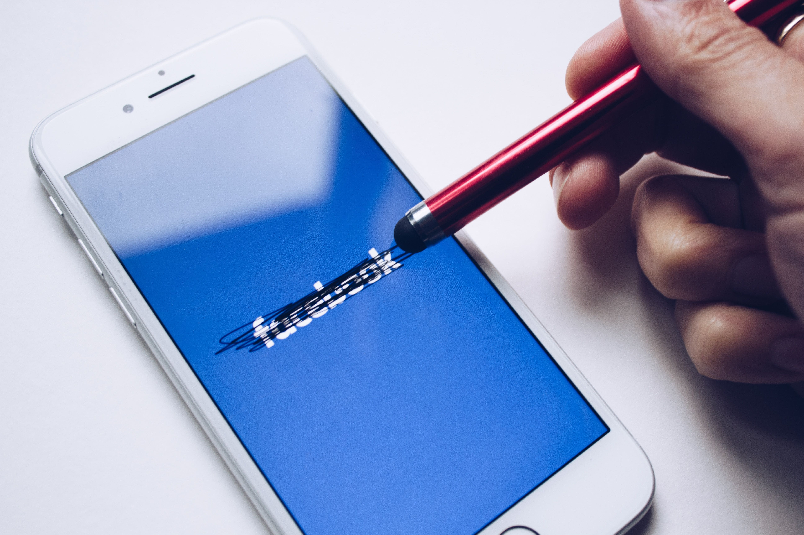

You Should Stop Using Meta (Facebook) Products at All Costs

Stop using Meta (Facebook) products right now. Yeah, you heard it right. The most popular messaging app is WhatsApp; the most popular photo-sharing app is Instagram, then Facebook, Threads, etc. They are not just convenient mobile apps or websites or something. These apps are effectively and intelligently built with the help of thousands of engineers and psychologists just to grab everyone's attention. They are spying on everything you do. They stole your voice, images, contacts, location, etc...
How was the company Facebook formed?
In 2003 Mark Zuckerberg, a student of Harvard University, developed a site called Facemash. It used to upload the photos of his friends and girls; other students studied at Harvard just to compare and then rate them. That was a really creepy idea. After getting complaints about how the platform works, Harvard takes it down due to privacy violations.
From Facemash, Mark found out that people love spending time comparing one another. So based on this fact, Mark Zuckerberg, along with some partners, founded Facebook and officially launched it in 2004.
In 2004 there was already a popular site called MySpace. But with faster updates to the web interface, interactive features, and speedy loading time, Mark managed to bypass the user base of MySpace using Facebook in a couple of years.
Even in the beginning stage of Facebook, Mark required users' real names and email addresses to allow them to create an account, while MySpace and other components worked almost anonymously. But actually, the email requirements of Facebook created a safe feeling in its users. Maybe because they now know somewhat with whom they are really interacting with.
By 2006, Facebook had grown further than just Harvard. Mark allowed anyone over age 13 to create accounts on his platform. Then within months Facebook introduced new features like news feed, status updates, profile pic and editing, loading time faster than MySpace, and a clean interface. With all of this, Facebook gained more unique users than MySpace had in around the 2008 – 2009 period.
The Expansion of Facebook.
As time passed, Mark was not really ready to just stay limited to the Facebook platform only. He wanted to grow it more, more than imaginable. So for that, instead of developing new services, Mark planned to buy some platforms that were already used by many users. Actually, this was for reducing development costs and increasing profit and market share of the company. Then he founds Instagram.
Fact
Facebook is the only service actually built by Mark Zuckerberg. Other giant platforms are actually acquired from others just to destroy them.
The acquisition of Instagram.
Actually, that was really a unique idea to post photos online just for connecting and comparing. That's why Kevin Systrom and Mike Krieger founded Instagram. In that time, Instagram was the only photo-sharing app with decent users. Instagram had around 12 employees and very little revenue at that time. But more than the Instagram development team, Mark found the true power of Instagram.
In 2012, by offering 1 billion dollars (which was much bigger than the actual worth of Instagram at that time), Mark proposed an idea to purchase Instagram. Kevin Systrom and Mike Krieger know they can't make Instagram popular alone, but with the help of a huge company like Facebook, maybe it's possible. So with a condition that Instagram always stay separate from Facebook, they sold Instagram to Zuckerberg while still staying as CEO and CTO of Instagram.
Eventually, just like Facebook, Mark added more interactive features like statuses, filters, and UI changes to Instagram. Then Mark started to forget the promise he had made, and he integrated Instagram with Facebook for better communication and interaction with users on both platforms.
After getting too much tension and argument about this, Kevin Systrom and Mike Krieger officially quit Instagram's CEO and CTO positions in 2018. This shocked the entire development team. The new CEO of Instagram is Mark Zuckerberg, and the app is now under his full control.
The acquisition of WhatsApp.
After the acquisition of Instagram, Mark also purchased a popular, widely used, simple messaging app called 'WhatsApp' from Jan Koum and Brian Acton. Mark acquired WhatsApp in 2014 for around $19 billion. Because of not having enough time and money to maintain the app, like the implementation of encryption and new features, founders Jan Koum and Brian Acton accepted the deal and sold the app for $19 billion to Mark Zuckerberg.
The beginning of data profiling.
Now Facebook owns some of the most used apps in this world. So now what?. They have to generate more revenue. More money means more user data required. Then Mark starts to implement powerful tracking code and capabilities into each app they own. And these apps started to share data between them to build massive user data profiling. Some of the creepy techniques they used are
- Behavioral profiling: Facebook tracks far more than what we like. What we speak, what is just typed and deleted, who we know and daily interact with, who our family members are, contacts and call logs, apps installed, battery level, time, etc.
- Shadow profiles: Facebook actually started to profile non-Facebook users by adding their analytics code into most of the websites we visit (news, video-sharing, blogs, etc.) and collecting data from Facebook users' mobile devices (contacts, call logs, location, physical activity, camera, etc.).
- Run experiments: Facebook has been caught running psychological experiments directly on users' feeds to analyze the behavior of millions. How they react to certain features, what they expect, etc.
When Facebook gets caught.
The Cambridge Analytica scandal.
A simple mistake exposed millions of users' data to a political consulting firm. They illegally harvested private profile data of Facebook users without explicit consent. Then later the data was used to show targeted political ads during the 2016 US presidential campaign.
This was the first time Zuckerberg got sued by law. They demanded a fine of $5 billion for Facebook's worst security practices.
Dark patterns to increase user engagement.
Beyond data breaches and data harvesting, Facebook has always tried to manipulate its users in the app to make them addictive and increase interaction time.
- Infinite scroll: A loop of homepage contents. The user scrolls upward, but the end is never reached. Users get a thought like mining gold, like "If I dig/scroll more, I will find something useful." "Which is not true at all.
- Personalized feeds: Instead of showing the same feed for everyone, Facebook shows separate personalized profiles for each user based on their needs or what Facebook thinks they must see. This was also used to manipulate voters to a certain candidate in election times.
- Instant account creation, but deletion is not that easy: Creating an Instagram account is an easy and guided 3 to 4 steps. But the account deletion is not that easy. They kept the delete button away from the visible area. No guide to delete or disable accounts. Users have to manually do this, which many don't even bother to do.
---
All these practices are really creepy and disturbing. If I describe the complete story, it will never end because it recently happened and is still happening. Millions of people are inside Meta's bubble even without knowing they are trapped in every sense. And the dopamine lock is not so easy to break; if you get addicted, there is no other way to escape than understanding the reality behind what you see.
The red pill is the answer.
Thank you for reading.